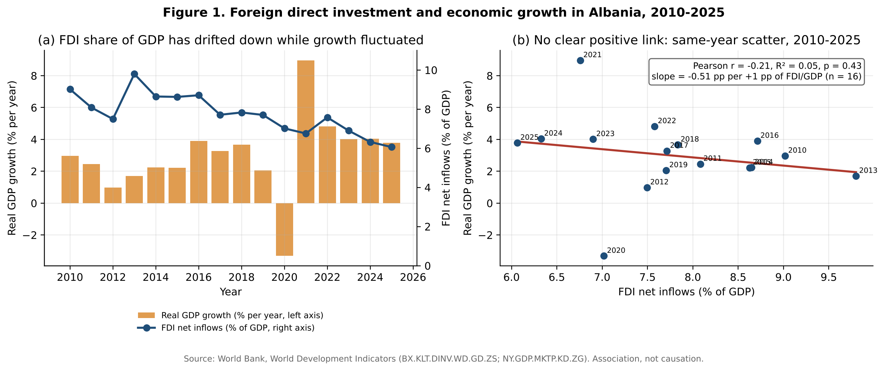
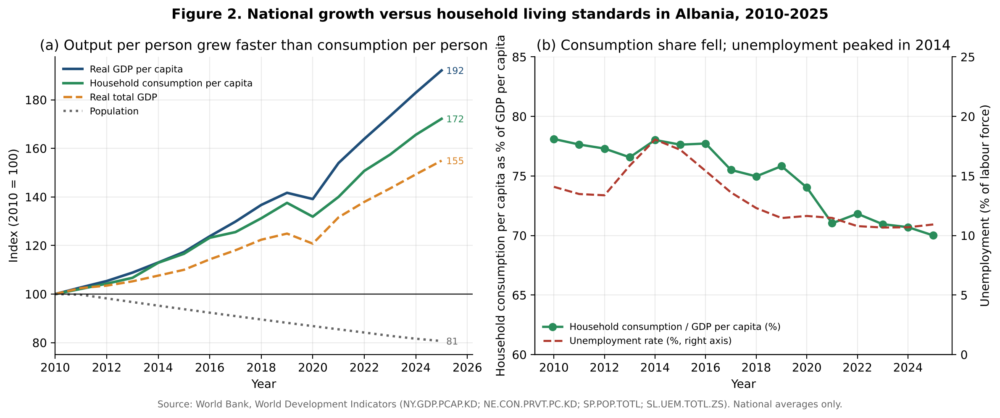

1. Introduction
Albania has attracted a steady stream of foreign direct investment (FDI) and has recorded positive economic growth in almost every year since 2010. Governments often point to such numbers as proof of success. But a national total is not the same as a household's experience: an economy can grow while many people feel little change. This project tests that gap with real data.
2. Research question and objectives
Question. Has foreign direct investment contributed to Albania's economic growth, and has this growth translated into improved living standards for ordinary citizens?
To make this measurable, it is split into two parts:
- Objective 1. Is the FDI share of GDP statistically associated with annual real GDP growth in Albania, 2010–2025?
- Objective 2. Did growth in output per person carry through to household consumption per person, and what do labour-market and price indicators add?
With 16 yearly observations of one country, this project can show associations. It cannot prove that FDI caused growth, or that anything caused changes in living standards.
3. Background: Albania and the Flamingo Revolution
Since the end of communism, Albania has moved from a closed economy to an open, middle-income one that relies on tourism, services, construction, remittances and foreign capital. Sustained emigration has shrunk its population: according to the World Bank series used here, it fell from about 2.91 million in 2010 to about 2.35 million in 2025.
In 2026 Albania saw a large protest movement, widely called the Flamingo Revolution. According to press reports, it began around late May 2026 as opposition to a planned luxury resort development reportedly linked to Jared Kushner in the protected Vjosa-Narta wetland area, home to flamingos and other wildlife. It later widened into broader protests about corruption, transparency and the political system, and a student-led wave followed in October. Some commentators describe it as a challenge to investor-led development and to inequality; the government and others may see it differently, and accounts differ on details. See the references for the sources.
Important limit. Our data run to 2025, so they end before the movement. The statistics here cannot say anything about what caused the protests or what they will change. The movement matters only as context: it shows that the relationship between foreign-backed investment, growth and ordinary people's interests is a live public debate in Albania.
4. Data sources
All series come from the World Bank World Development Indicators (WDI), downloaded for Albania, 2010–2025, using the World Bank API (script src/01_fetch_data.py, retrieved 25 November 2026). There were no missing values in the 16 years.
| Variable | WDI code | Role |
|---|---|---|
| FDI, net inflows (% of GDP) | BX.KLT.DINV.WD.GD.ZS | Main explanatory variable |
| FDI, net inflows (current US$) | BX.KLT.DINV.CD.WD | Robustness check |
| GDP growth (annual %) | NY.GDP.MKTP.KD.ZG | Economic growth |
| GDP per capita (constant 2015 US$) | NY.GDP.PCAP.KD | Output per person |
| Household consumption per capita (constant 2015 US$) | NE.CON.PRVT.PC.KD | Living-standards proxy |
| Unemployment, total and youth (% of labour force, ILO modelled) | SL.UEM.TOTL.ZS, SL.UEM.1524.ZS | Labour market |
| Inflation, consumer prices (annual %) | FP.CPI.TOTL.ZG | Prices |
| Personal remittances received (% of GDP) | BX.TRF.PWKR.DT.GD.ZS | Context |
| Population, total | SP.POP.TOTL | Context and per-capita effects |
Not included. Average wages, median income and inequality measures are not available as a consistent annual WDI series for Albania. INSTAT (Albania's statistical institute) publishes wage data, but I did not use them, so the project uses household consumption per person as its main living-standards measure and states this limit openly.
| Year | FDI (% GDP) | GDP growth (%) | GDP p.c. (const. US$) | Household cons. p.c. (const. US$) | Unemployment (%) | Inflation (%) | Population |
|---|---|---|---|---|---|---|---|
| 2010 | 9.02 | 2.97 | 3,580 | 2,796 | 14.1 | 3.6 | 2,913,021 |
| 2011 | 8.08 | 2.46 | 3,678 | 2,856 | 13.5 | 3.4 | 2,905,195 |
| 2012 | 7.50 | 0.98 | 3,772 | 2,916 | 13.4 | 2.0 | 2,860,708 |
| 2013 | 9.80 | 1.71 | 3,896 | 2,983 | 15.9 | 1.9 | 2,816,902 |
| 2014 | 8.65 | 2.24 | 4,045 | 3,156 | 18.1 | 1.6 | 2,773,767 |
| 2015 | 8.63 | 2.23 | 4,200 | 3,260 | 17.2 | 1.9 | 2,731,293 |
| 2016 | 8.71 | 3.91 | 4,432 | 3,444 | 15.4 | 1.3 | 2,689,469 |
| 2017 | 7.71 | 3.28 | 4,648 | 3,510 | 13.6 | 2.0 | 2,648,285 |
| 2018 | 7.83 | 3.67 | 4,894 | 3,669 | 12.3 | 2.0 | 2,607,733 |
| 2019 | 7.71 | 2.06 | 5,072 | 3,846 | 11.5 | 1.4 | 2,567,801 |
| 2020 | 7.02 | -3.31 | 4,981 | 3,687 | 11.6 | 1.6 | 2,528,480 |
| 2021 | 6.76 | 8.97 | 5,512 | 3,915 | 11.5 | 2.0 | 2,489,762 |
| 2022 | 7.58 | 4.83 | 5,868 | 4,214 | 10.8 | 6.7 | 2,451,636 |
| 2023 | 6.90 | 4.02 | 6,204 | 4,402 | 10.7 | 4.8 | 2,411,658 |
| 2024 | 6.33 | 4.05 | 6,549 | 4,630 | 10.7 | 2.2 | 2,377,128 |
| 2025 | 6.06 | 3.79 | 6,877 | 4,814 | 10.9 | 2.1 | 2,349,580 |
5. Methodology
- Percentage change and CAGR. Compound annual growth rate: CAGR = (Vend / Vstart)1/n − 1, where n is the number of years.
- Index numbers. Indext = 100 × Vt / V2010, so different variables can be compared on one scale.
- Pearson correlation. r = Σ(xi − x̄)(yi − ȳ) / √[Σ(xi − x̄)² Σ(yi − ȳ)²]; Spearman's ρ is the same idea on ranks.
- Simple linear regression (OLS). y = a + b·x + error, where b = Σ(xi − x̄)(yi − ȳ) / Σ(xi − x̄)², a = ȳ − b·x̄, and R² is the share of the variation in y that the line accounts for. 95% confidence intervals use the t-distribution with n − 2 degrees of freedom.
Everything was computed in Python (pandas, SciPy, Matplotlib) and can be reproduced with the scripts in the repository.
6. Analysis 1: Is FDI associated with economic growth?
Across 2010–2025, FDI net inflows averaged 7.8% of GDP (range 6.1%–9.8%) while real GDP growth averaged 3.0% per year (standard deviation 2.5 percentage points). The FDI share has trended downward by about 0.17 percentage points per year (p = 0.0002).
| Specification | n | Pearson r | p-value | Slope (pp growth per +1 pp FDI/GDP) | 95% CI of slope | R² |
|---|---|---|---|---|---|---|
| Same year, 2010–2025 | 16 | −0.21 | 0.43 | −0.51 | −1.87 to 0.84 | 0.05 |
| FDI lagged one year | 15 | −0.31 | 0.27 | −0.83 | −2.36 to 0.71 | 0.09 |
| Same year, excluding 2020–21 (COVID) | 14 | −0.46 | 0.096 | −0.49 | −1.08 to 0.10 | 0.21 |
As an additional check, FDI measured in US$ billions had a Pearson correlation of 0.34 (p = 0.20) and a Spearman rank correlation of 0.55 (p = 0.027) with growth. Because both series trend over time and dollar amounts are not adjusted for the size of the economy, I treat that result with caution; it is one of several tests, and the share-of-GDP version is the more meaningful measure.

Interpretation. In none of the specifications is there a statistically significant positive association between the FDI share of GDP and growth; point estimates are slightly negative but their confidence intervals comfortably include zero. With only 14–16 observations, the test has little power, so this is not evidence that FDI is unhelpful; it is that these national yearly data show no clear link. Growth swings, especially the 2020 contraction (−3.3%) and 2021 rebound (+9.0%), are dominated by the pandemic rather than by FDI.
7. Analysis 2: Did growth reach households?
| Indicator | Total change 2010→2025 | CAGR 2010–2025 | CAGR 2010–2019 | CAGR 2019–2025 |
|---|---|---|---|---|
| Real GDP per capita | +92.1% | 4.45% | 3.95% | 5.20% |
| Household consumption per capita | +72.2% | 3.69% | 3.61% | 3.81% |
| Real total GDP | +55.0% | 2.96% | 2.50% | 3.66% |
| Population | −19.3% | −1.42% | −1.39% | −1.47% |
- Annual growth in household consumption per person closely tracks growth in GDP per person: slope 0.86 (95% CI 0.49 to 1.22), r = 0.81, R² = 0.66, p < 0.001, n = 15.
- But the level of consumption fell relative to output: household consumption per person was 78.1% of GDP per person in 2010, 75.8% in 2019 and 70.0% in 2025.
- Unemployment rose from 14.1% (2010) to a peak of 18.1% (2014), then fell to 10.9% (2025); youth unemployment moved from 30.9% to 39.6% to 25.6%.
- Consumer prices rose by an estimated cumulative 44.1% between 2010 and 2025, including a 6.7% spike in 2022. Consumption figures are already in constant prices, but households experience price jumps directly.
- Remittances fell from 13.1% to 8.4% of GDP.

Interpretation. Average living standards, as proxied by household consumption per person, clearly rose: by about 72% in real terms. So the "growth gap" is not that growth failed to reach households entirely. Rather, consumption per person grew more slowly than output per person (+72% vs +92%), and its share fell by 8 percentage points. Part of the rise in GDP per person is arithmetic: the population shrank by 19%, while total real GDP grew by 55%. Per-person figures are national averages and say nothing about how gains were distributed.
8. Discussion
Taking the two parts together: (1) no clear statistical link appears between FDI intensity and growth in these data, and (2) average household consumption rose substantially but less than output per person. Several explanations are consistent with this, but this project cannot test them: GDP includes profits that foreign investors may send abroad; investment, exports or saving may have taken a bigger share of output; consumption per person is an average that could hide unequal gains; and emigration and remittances change who is counted and how households cope.
What the data can support is a cautious message: national growth and foreign investment totals are not enough to show how ordinary people are doing. To judge the gap the Flamingo Revolution points to, one would need distributional data (median income, wages, poverty and inequality, housing costs) and, for causal claims about FDI, firm-level or regional data and a proper identification strategy. I make no claim that the protests changed, or were caused by, any of the trends above.
9. Limitations
- Small sample: 16 annual observations; low statistical power and wide confidence intervals.
- Correlation, not causation: no control variables; omitted factors (tourism, construction, earthquakes, COVID, remittances) affect both FDI and growth.
- Averages only: no information on inequality, wages or poverty; consumption per capita is a proxy for living standards, not a direct measure.
- Data quality: FDI is measured in balance-of-payments terms and can be revised; unemployment is an ILO modelled estimate; WDI values are revised over time (retrieved 25 Nov 2026).
- Time-series issues: trends and shared shocks (COVID) can create or hide correlations; I did not run formal tests such as Granger causality or cointegration.
- Timing: data end in 2025, before the Flamingo Revolution.
- Multiple tests: I report several specifications; the one nominally significant result (Spearman, FDI in US$) should not be over-read.
10. Conclusion
Between 2010 and 2025, Albania's real GDP per person nearly doubled and average household consumption per person rose by about 72%. Yet the data do not show a statistically clear link between the FDI share of GDP and annual growth, and household consumption grew more slowly than output per person. Together this suggests that headline growth and FDI numbers give an incomplete picture of ordinary people's economic situation. The data cannot establish causes, and further work with distributional and wage data is needed to assess who benefited.
11. References
- World Bank. World Development Indicators, Albania, indicators listed in section 4. data.worldbank.org. Accessed 25 November 2026 via the World Bank API.
- Hobbs, S., Paparas, D., & AboElsoud, M. E. (2021). Does Foreign Direct Investment and Trade Promote Economic Growth? Evidence from Albania. Economies, 9(1), 1. https://doi.org/10.3390/economies9010001 (further reading on the Albanian FDI–growth literature).
- Hoxhaj, M., & Pulaj, I. (2022). An Overview of Foreign Direct Investment in Albania. European Journal of Business & Management Research, 7(4), 256–260. https://doi.org/10.24018/ejbmr.2022.7.4.1542 (further reading).
- BirdLife International (4 June 2026). Albania's flamingo protests: When a government sells off a wetland, it's selling off democracy too. birdlife.org.
- Waging Nonviolence (June 2026). Inside Albania's youth-led 'flamingo revolution'. wagingnonviolence.org.
- Democracy Now! (21 October 2026). Flamingo Revolution: Albania protests escalate over corruption & Kushner/Trump luxury resort. democracynow.org.
- Wikipedia. Flamingo Revolution. en.wikipedia.org/wiki/Flamingo_Revolution (used only for orientation; accessed 25 November 2026).